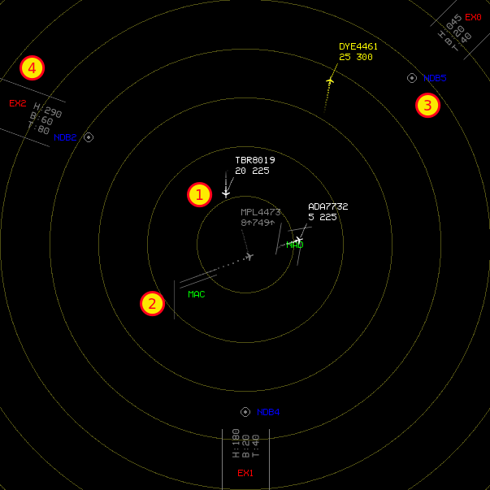

Game screen¶
The game screen is organised in four main areas:

- radar screen (1)
- You can see here the aeroplanes, aeroports, beacons and gates which are used during the game
- command console (2)
- Here you issue commands either to the game engine (for getting help, pausing, quitting...) or to aeroplanes (to alter they course or perform special operations)
- flight strips (3)
- Here you have a list of planes currently under your control, with some data which is not available on the main radar screen
- aeroport maps (4)
- Here you have a detailed map of the map’s aeroports: aeroports are also visible on radar screen, but in this game area they are big enough for you to identify individual runways.
The radar screen¶
The radar screen gives you an overview of the situation in the aerospace you are controlling. The typical elements you will find in it are:
- Radar targets (aeroplanes), with their flight number, altitude and speed indicated in the label next to them.
- Aeroports, identified by their IATA code.
- Gates, which are the entry and exit points for the aeroplanes in the aerospace.
- Beacons, which are points whose location is known to aeroplane pilots, and thus can be used to direct aeroplanes (e.g.: DLH1234 HEAD NDB1 to direct the Lufthansa flight #1234 towards the beacon marked NDB1 on the radar).
The command console¶

The command console is the area you use to control the game. In ATC-NG all commands (whether they are game commands like QUIT or plane commands like HEADING) are issued through the console.
The bottom, larger line is the interactive prompt where you compose the command (press Enter to attempt command execution). The smaller lines above that show the history of the past commands, and what happened once executed.
The flight strips¶

The flight strips show some data that is not available on the main radar screen, such the departure and destination, or the amount of fuel still available onboard the aeroplane).
The aeroport maps¶

The main function of the aeroport maps is to give you a detailed view of the available runways, so that you can decide which ones to use for takeoffs and landings.